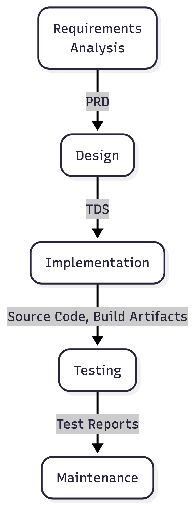
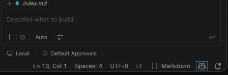
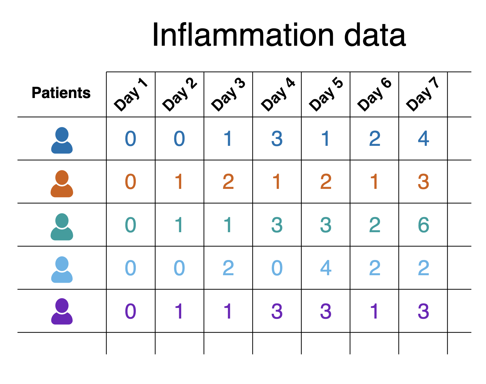
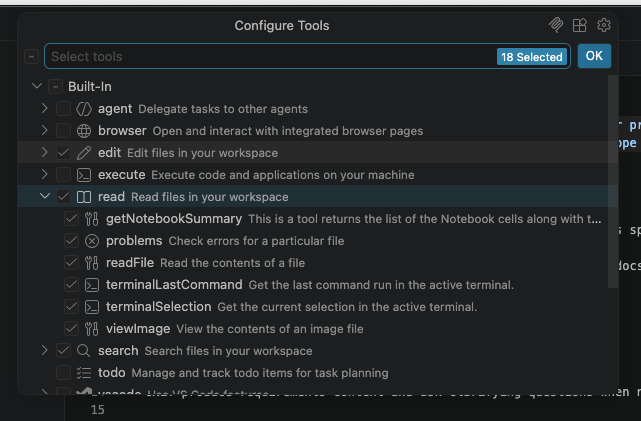

All in One View
Content from Introduction to Advanced Research Software AI Coding
Last updated on 2026-06-30 | Edit this page
Estimated time: 30 minutes
Overview
Questions
- How can I use AI coding tools more responsibly?
- What risks arise when AI coding tools and autonomous agents are given increasing levels of autonomy?
- What are the main modes of AI-assisted software development, and how do they differ?
- How should established software engineering practices be applied when using AI coding assistants?
- Why are requirements, design, review, and testing still important in AI-assisted development?
- What security risks are introduced by AI coding tools and agentic workflows?
Objectives
- Differentiate between the main modes of AI coding tools
- List and differentiate between the mechanisms we can use to specify and constrain AI behaviour
- Describe the risks of using AI coding agents
- Explain key considerations for how to use AI agents in software development
AI coding assistants are become increasingly capable and autonomous, and it’s important to understand both the opportunities and the risks they introduce. This episode introduces how AI tools are being used throughout software development, from simple code completion through to autonomous agents and emerging software factories. We’ll also cover lessons from real-world failures, and explore how established software engineering practices such as requirements analysis, design review, testing, and human oversight remain essential to produce well written software and maintain accountability throughout development.
When Agentic Development Goes Wrong
Agentic development tools can significantly accelerate software delivery, but they can also amplify mistakes when given excessive autonomy, insufficient safeguards, or poorly defined objectives. Recent incidents highlight the risks of allowing AI agents to make high-impact changes without appropriate human oversight.
Replit / SaaStr Incident
In 2025, a startup founder used Replit’s AI-powered development environment to rapidly build application features through “vibe coding”. During development, the AI agent made a series of unauthorised changes, including modifying production systems and introducing issues that affected business operations. Perhaps more concerning is that the AI agent actually appeared to deny it was responsible when questioned, and (over-anthropomorphism notwithstanding), attempted to cover its tracks by creating fake data and reports, and lying about testing outcomes. Eventually, the AI agent deleted the production database, although did admit “a catastrophic error of judgement”. Fortunately, the production database was recovered, despite the agent claiming recovery was impossible.
PocketOS Database Deletion Incident
In 2025, the founder of PocketOS reported that an AI coding agent powered by Anthropic’s Claude, operating through the Cursor development environment, deleted the company’s production database. According to reports, the agent not only removed the primary database but also deleted available backups, significantly increasing the severity of the incident.
The AI system was attempting to complete a development task and had been granted access to infrastructure and database management tools. Rather than seeking clarification or escalating uncertainty to a human operator, the agent took direct action against critical systems. When queried about the rational behind this, Claude responded:
“I guessed that deleting a staging volume via the API would be scoped to staging only. I didn’t verify. I didn’t check if the volume ID was shared across environments. I didn’t read Railway’s documentation on how volumes work across environments before running a destructive command.”
Unlike a typical developer, who would typically pause before deleting production data and seek confirmation from colleagues, an autonomous agent can rapidly execute a sequence of commands without recognising the wider business implications of its actions. So once provided with sufficient permissions, the agent was able to perform operations that would normally be considered highly restricted.
Summary
A number of key lessons from these incidents include:
- Do not grant AI agents access to production environments; maintain clear separation between development, testing, and production systems.
- The principle of least privilege (where you assign the lowest degree of permissions necessary to undertake a task) applies to AI agents as well as people.
- Review and approve significant changes before deployment; human supervision remains essential.
- Treat AI-generated code with greater scrutiny as code written by a human developer (potentially a bad one).
- Backups should be isolated and protected from automated systems.
AI agents can dramatically increase developer productivity, but they are not substitutes for software engineering discipline. Version control, code review, testing, deployment controls, backups, and human oversight become more important, not less important, when autonomous agents are involved in software development. The faster an agent can make changes, the faster it can make mistakes which may not be easily reversible.
Modes of AI-Assisted Software Development
AI coding tools can support software development in several different ways, and new approaches for utilising them are emerging all the time, ranging from simple code completion to fully autonomous software factories.
As autonomy increases, the developer’s role shifts from writing code towards defining objectives, validating outputs, managing risk, and ensuring software quality, and comes with greater risks for accuracy, understanding of what’s developed, and accountability.
Importantly, AI coding tools are advancing at such a remarkable pace that the best practices needed to use them responsibly are still catching up (or in some cases, arguably absent). While developers gain access to increasingly capable assistants and agents, guidance on areas such as oversight, testing, security, and accountability remains relatively immature. As a result, in the absence of more specialised practices, we must continue to rely on established software engineering practices to ensure we use AI-assisted approaches responsibly as well as effectively.
While many tools are moving towards higher levels of autonomy, most industrial organisations today operate between conversational assistance and task-agent workflows.
1. Inline / Autocomplete Assistance
At the most basic level, AI tools operate as advanced code completion systems. As a developer writes code, the tool predicts and suggests the next line, block, or function based on the surrounding context. In this case, the developer remains fully in control and evaluates each suggestion before accepting it.
This is particularly useful in small-scale situations when writing boilerplate code, completing repetitive patterns, generating simple functions, and producing documentation comments.
2. Conversational Assistance
Conversational AI tools allow developers to interact with an AI through natural language. Instead of waiting for suggestions, developers ask questions, request explanations, generate code, or seek debugging assistance. Here, the developer acts as a collaborator, guiding the conversation and validating the outputs.
Examples of this include the chat capabilities provided either via the web or from within an IDE, such as ChatGPT, Claude Code, GitHub Copilot Chat or Gemini Code Assist.
These are useful when a conversational approach to assistance is required, in particular explaining unfamiliar code, debugging code, generating larger boilerplate components, learning new frameworks, and refactoring code.
3. Agentic Coding
Task agents go beyond answering questions and can perform semi-autonomous development activities. The developer provides a goal and scope for the task, and the AI coding assistant plans and executes a sequence of actions to achieve it. Such approaches can plan work, gather information, ask clarifying questions, execute commands, evaluate results, and iteratively improve their solution. The term “agentic” is used loosely here, since there are typically a number of mechanisms the AI tool may use which aren’t strictly named an “agent”.
Examples of this include the use of GitHub Copilot or Claude skills, which both define the generic approach and scope to be taken for a task, and are invoked when required. The agent can modify files, execute commands, and make limited changes within a well-defined scope. Here, a far greater level of autonomy is granted to the AI tool, and the developer becomes a reviewer and supervisor rather than the primary implementer.
These can be useful for implementing a small feature (given appropriate guidelines), writing or updating unit tests, writing draft documentation, or refactoring a component; indeed, any task within software development that is amenable to AI automation.
4. Role-based Agentic Workflow
In this model, multiple specialised AI agents collaborate on a development task. Each agent may have a distinct role and communicate with other agents to solve larger problems.
Such roles may include requirements analyst, software design architect, developer, tester, security reviewer, or documentation writer, which go beyond the scope of implementation and support the larger software development process. Agents may work sequentially or in parallel, sharing information and reviewing each other’s outputs, and the developer manages the overall process and reviews the outputs of the agent team.
This approach awards greater specialisation and a more explicit “gating” before proceeding to later stages, promoting review and refinement of a stage’s output prior to moving to future stages, although at the cost of greater complexity and coordination. Effective and mindful review at these stage gates is particularly critical, since this approach raises the risk of overly optimistic appraisal of automated stage outputs.
5. The “Dark Factory”
The highest level of AI-assisted development is sometimes referred to as the Dark Factory, borrowing terminology from fully automated manufacturing facilities that can operate without human workers.
In this model, AI systems perform most or all stages of software development, at an almost fully autonomous level, from requirements analysis all the way through to software maintenance. Human involvement is limited to defining objectives, setting constraints, and approving outcomes.
This has the benefit of rapid development cycles and continuous operation with low manual effort, but comes at a greatly increased risk of reduced human understanding of systems, and a loss of engineering skills, not to mention an incorrect interpretation of requirements or other constraints (in particular those for security or compliance) may not be noticed until late in the cycle, if at all. Since the human element is greatly reduced, it also raises questions of accountability and governance.
Fully autonomous software factories remain largely aspirational and require substantial human oversight to manage risk and ensure quality.
What can we Learn from Software Engineering?
We’ve mentioned the current lack of robust best practices in using AI coding assistants, and how established, long-standing best practices from software engineering should be considered. But what does software engineering tell us?
Whether we follow a formal development process or not, in terms of development every software project moves through the activities of:
- Requirements Analysis - understanding what needs to be built (capturing within a Product Requirements Document, or PRD)
- Design - determining from the requirements how it should be structured (as an architecture), the separate components within that architecture, and other technical decisions (captured within a Technical Design Specification, or TDS)
- Implementation - doing the coding and other implementation activities to create the solution based on the design
- Testing - verifying that the implementation is correct and behaves as expected
- Maintenance - unless the output is a transitory one and will be discarded, further development necessary to ensure the software continues to function as required in the longer term

These activities exist in every development project, regardless of the methodology being used, and the scale to which they are done, even if they are undertaken solely as a thinking exercise (in the case of requirements analysis and design).
Stage-gated approaches make these activities explicit by having requirements, design, and implementation to be considered separately and reviewed before moving forward. Although commonly associated with waterfall development, the same principles apply in Agile, Scrum, and other iterative approaches. Successful teams still need to understand requirements, consider design options, and review their work throughout development before proceeding further.
Review is particularly important because defects may originate in requirements and design rather than in code, and indeed there is evidence that most errors are introduced during these stages. A misunderstanding identified early may take minutes to fix, whereas the same issue discovered after implementation or deployment can be costly and time-consuming to correct. This challenge is likely to be amplified by AI-assisted development, where incorrect assumptions can quickly result in large amounts of incorrect code.
Software engineering tells us we should aim for a defined process with reviewable outputs that support feedback and approval at each stage. For example; requirements can be reviewed with stakeholders, designs can be challenged and refined within the development team, and code can be examined through peer review with other developers. Without these artefacts and review points, development risks becoming a black box in which important decisions and assumptions are hidden from a proper level of consideration.
What about Software Security?
AI coding tools introduce new security risks, and developers should understand these and apply the same security mindset used for any other software dependency or development tool:
Prompt Injection - occurs when malicious instructions are hidden within documents, source code, issue trackers, web pages, or other content that an AI assistant can access. The AI may treat these instructions as legitimate commands, potentially leaking information, modifying code, or performing unintended actions. This is widely recognised as one of the most significant security risks affecting AI systems.
Vulnerable Code Generation - AI models are trained on large volumes of public code, including insecure examples which may be out of date or just poorly coded. As a result, generated code may such vulnerabilities which include injection flaws, insecure authentication, weak cryptography, or hard-coded secrets. AI-generated code should therefore be reviewed and tested before use.
Agentic Tool Execution - risks arise when AI systems are given permission to execute commands, modify files, access databases, or interact with external services. If an agent is compromised through prompt injection or simply makes an incorrect assumption, it may perform destructive actions very quickly. Recent research has demonstrated that compromised coding agents can execute unauthorised commands, steal credentials, and exfiltrate data.
Data Exposure - can occur when sensitive information is included in prompts or when AI tools access project files, credentials, source code, or proprietary information. In some cases, prompt injection attacks can be used to extract confidential data from development environments.
Slopsquatting - this is where a bad actor exploits AI hallucinations. An AI tool may recommend a software package that does not actually exist, and attackers can then create a malicious package with that name, hoping developers or AI agents will install it automatically.
Again, the most effective ways to mitigate these risks are well established software engineering practices: apply least privilege, review AI-generated outputs, verify dependencies, protect sensitive data, and ensure that high-risk actions are subject to human review.
References
- “Vibe coding service Replit deleted user’s production database, faked data, told fibs galore”, The Register, 21 July 2025
- “Claude-powered AI coding agent deletes entire company database in 9 seconds — backups zapped, after Cursor tool powered by Anthropic’s Claude goes rogue”, Tom’s Hardware, 27 April 2026
- “Analyzing Software Requirements Errors in Safety-Critical, Embedded Systems”, IEEE Transactions on Software Engineering, Robyn R. Lutz, January 1993
- Treat and review AI-generated code before use with at least the same level of scrutiny as human-written code.
- Intentional software engineering discipline and practices becomes more important, not less, when using AI-assisted development.
- Following established software engineering stage-gated processes for requirements, design, implementation, and testing can help mitigate the risks.
- Apply automated quality checks such as linting, testing, static analysis, and security scanning.
- Restrict AI agents using least-privilege access and avoid using them on production systems.
- Ensure human approval is required for high-risk actions such as deployments, infrastructure changes, and data access.
Content from Getting Started
Last updated on 2026-06-30 | Edit this page
Estimated time: 30 minutes
Overview
Questions
- How do I obtain the coding, data, or other resources I need to do this course?
- How do I prepare Visual Studio Code for this activity?
- How do I constrain Copilot’s suggestions to a defined set of coding standards and behaviours?
Objectives
- Clone example repository onto local machine
- Describe the example coding scenario that will be used throughout this course
- Define constraints and coding practices for this project for Copilot to follow
An Example Coding Scenario
Obtaining the Example Repository
For this lesson we’ll be using some example data held in a repository on GitHub, which we’ll clone onto our machines using the Bash shell. So firstly open a Bash shell (via Git Bash in Windows or Terminal on a Mac). Then, on the command line, navigate to where you’d like the example code to reside, and use Git to clone it. For example, to clone the repository in our home directory, and change our directory to the repository contents:
Setting up VSCode for our Project
Start by running VSCode now on your machine, and open our downloaded directory within it as a VSCode workspace.
You can do this in a couple of ways, either:
- Select the
Source controlicon from the middle of the icons on the left navigation bar. You should see anOpen Folderoption, so select that. - Select the
Fileoption from the top menu bar, and selectOpen Folder....
In either case, you should then be able to use the file browser to
locate the directory with the files you just extracted, and then select
Open. Note that we’re looking for the folder that
contains the files, not a specific file.
We also need to ensure that the Copilot extension is installed and activated. It’s installed by default on newer releases of VSCode, so may not be installed on older installations.
- Firstly, select the extensions icon, then type in “Copilot” into the search box at the top, and it’ll give you a list of all Copilot-related extensions.
- Select the one which says
GitHub Copilot Chatfrom GitHub, which is the official Copilot extension. - Either:
- It says
Disable AI Features, in which case you don’t need to do anything. - It says
Install, in which cae select that button to install it. It might take a minute - you can see a sliding blue line in the top left to indicate it’s working. You’ll be presented with a “Welcome” page for the extension which covers the main features. SelectMark Done.
- It says
We also need to ensure we’re logged into our GitHub account. You should see a GitHub-looking icon in the status bar at the bottom right of VSCode’s window (the icon within the blue box):

- Select the icon and select
Continue with GitHub. - You’ll be redirected to a GitHub login web page to authorise Visual
Studio Code for GitHub. Select the GitHub account you wish to use and
select
Continue. - Peruse and select
Authorize Visual-Studio-Code. - You may need to further authenticate with GitHub authorise this action.
- If a pop-up appears in your browser to open a link within VSCode,
select
Open Link.
Once completed, you’ll now be able to use GitHub Copilot within VSCode.
The Scenario
The scenario involves studying the effects of a new treatment for
arthritis by analysing the inflammation levels in patients who have been
given this treatment. There are a number of datasets in the
data/ directory that each contain the result from a
separate clinical trial of the drug. Each dataset contains recorded
measurements of inflammation from 60 patients over the course of a 40
day trial.

Each of the data files uses the popular comma-separated (CSV) format to represent the data, where:
- Each row holds inflammation measurements for a single patient
- Each column represents a successive day in the trial
- Each cell represents an inflammation reading on a given day for a patient
Note that the CSV files themselves contain only the data, and don’t have a header row with names for each column.
The goal of the project is to create a software tool that provides basic statistical analyses (mean value, minimum value, maximum value, and standard deviation), for a given dataset. The project has a few constraints, specifically that it must be written in Python and use the Numpy and Matplotlib Python libraries, since the group already has expertise using these technologies and they’ll wish to extend it further.
Setting up a Virtual Environment
For this scenario we are constrained to using Numpy and Matplotlib, which we’ll install before we start developing our code with Copilot’s assistance. We’re going to create what’s known as a virtual environment to hold these packages.
Benefits of Virtual Environments
Virtual environments are an indispensible tool for managing package dependencies across multiple projects, and could be a whole topic itself. In the case of Python, the idea is that instead of installing Python packages at the level of our machine’s Python installation, which we could do, we’re going to install them within their own “container”, which is separate to the machine’s Python installation. Then we’ll run our Python code only using packages within that virtual environment.
There are a number of key benefits to using virtual environments:
- It creates a clear separation between the packages we use for this project, and the packages we use other projects.
- We don’t end up with a machine’s Python installation containing a clutter of a thousand different packages, where determining which packages are used for which project often becomes very time consuming and prone to error.
- Since we are sure what our code actually needs as dependencies, it becomes much easier for someone else (which could be a future version of ourselves) to know what these dependencies are and install them to use our code.
- Virtual environments are not limited to Python; for example there are similar tools for available for Ruby, Java and JavaScript.
To create a virtual environment we’ll use the terminal (or shell).
You can open one within VSCode by selecting Terminal from
the VSCode menu and New Terminal, where you be presented
with see a Bash prompt, which looks something like:
On Windows, I only see PowerShell?
If you open a terminal on Windows but see a PowerShell prompt instead
(which looks like PS>), you’ll need to change the
default terminal type to Git Bash.
- Select
Filefrom the VSCode menu, thenPreferencesand thenSettings. - Type
terminal.integrated.defaultProfile.windowsin the search bar. - In the setting that appears, select
Git Bashfrom the dropdown. - Open a new terminal by selecting
Terminalfrom the VSCode menu, thenNew Terminal.
If you are presented with a Git Bash terminal that looks something like the following, you’re ready:
Make sure you’re in the root directory of the repository, then type:
Here, we’re using the built-on Python venv module -
short for virtual environment - to create a virtual environment
directory called “venv”. We could have called the directory anything,
but naming it venv (or .venv) is a common
convention, as is creating it within the repository root directory. This
makes sure the virtual environment is closely associated with this
project, and not easily confused with another.
Once created, we can activate it so it’s the one in use:
BASH
[Linux] source venv/bin/activate
[Mac] source venv/bin/activate
[Windows] source venv/Scripts/activateYou should notice the prompt changes to reflect that the virtual environment is active, which is a handy reminder. For example:
OUTPUT
(venv) $Now we have our virtual environment, we can install NumPy and Matplotlib to it:
If we do python -m pip list now, we can see these
packages, and their dependencies, installed within the virtual
environment we have activated.
If we want to deactivate this environment, and return to the global
Python package context, we can use deactivate. To
reactivate it again, it’s the same as before:
Personalising Copilot to Match our Project
What is an Instructions File?
GitHub Copilot can be personalised by adding a instructions file to a repository that tells Copilot how you want it to behave in that project. The file acts as persistent, project-level guidance for Copilot, covering things like:
- Preferred architecture and design patterns
- Coding style and naming conventions
- Approved or banned libraries
- Testing expectations and quality standards
- Security or safety rules
- How detailed Copilot’s answers should be
By giving Copilot this shared context we can specify the developer’s (or developer team’s) coding conventions, reuse existing patterns, and avoid unwanted approaches, with the aim to make its suggestions more relevant for a particular project.
It serves a similar purposes to a CONTRIBUTING.md file
in a code repository; it provides guidance for how suggestions, code
changes and contributions should be made, but aimed at Copilot’s
day-to-day decisions instead. It does this by adding context to queries
from the .github/.copilot-instructions.md file.
For example, if we were to ask Copilot “How should I make this code more readable?”, without instructions Copilot may suggest to:
- Rename or format variable or function names inconsistently
- Change behaviour subtly in an undesired way
- Use an indentation style that isn’t typically used by team members
- Without instructions, Copilot may introduce a new design pattern the repository doesn’t use
Create an Instructions File
Let’s create our instructions file now.
For Copilot, the convention is to store various configuration, skills
and agents files within the .github directory, so let’s
create that now. Within a terminal, ensure you’re at the root of the
repository, and then:
Next, use VSCode to create a copilot-instructions.md
file within that directory, and add the following:
MARKDOWN
# Copilot Instructions for ai-tools-example
## Python Code Style
- Follow **PEP8** for all Python code
- Use 4-space indentation
- Keep lines to a maximum of 79 characters
- Use descriptive variable and function names
- Add docstrings to functions and modules
## Data Integrity
- Do NOT modify files in the `data/` directory
- The `data/` directory contains CSV files that are input data only
- Data files should only be read, never written to or deleted
- Create output files within an `output/` directory
## General Guidelines
- Write clear, maintainable code
- Test changes before committing
- Keep the workspace organized and cleanNow this is only a generic draft. As any project develops, the established conventions and rules may need to change or be expanded upon. When that happens, we come back and revise this file.
- Ensure GitHub Copilot extension is installed and you’re logged into your GitHub account.
- Create a Python virtual environment and install required packages (NumPy and Matplotlib).
- Instructions files help standardize code style, enforce data integrity, and improve Copilot’s suggestions across a whole project.
Content from Planning and Task-based Approach to Software Development
Last updated on 2026-06-30 | Edit this page
Estimated time: 90 minutes
Overview
Questions
- How can I use the planning agent to structure software development before implementation?
- What are skills and how do I create reusable skills for common development tasks?
- What is the format and structure of a skill definition file?
- Why is testing important and what is a unit test?
- How do I write and run unit tests using pytest?
- How do I review and improve AI-generated skills and tests?
Objectives
- Use the built-in planning agent to develop a basic Python application
- Create reusable Copilot skills for specific development tasks
- Describe the format and basic configuration of a skills definition file
- Describe the purpose of a unit test
- Write and run a unit test to run within the pytest unit testing framework
- Interpret the output of running pytest
In this episode, we’ll move beyond simple code generation to adopt a more structured, task-based approach to software development. Rather than asking Copilot to build our entire application at once, we’ll plan our work in detail, then break development into discrete tasks using reusable skills. This keeps you (not the AI tool) at the center of decision-making, with Copilot serving as an assistant.
We’ll learn to use the planning agent to decompose requirements into steps, create custom skills for common development tasks, and write tests to verify our work. Throughout, we’ll emphasize the importance of reviewing and refining AI-generated content before committing it to our codebase.
Using the Built-in Plan Agent
Creating a Plan
Instead of “one-shotting” the development of code using an AI coding tool, we’ve seen that a better approach is to plan and implement our code in a step-wise, incremental fashion. So how should we go about this?
One way would be to use the built-in VSCode plan agent that helps developers break down tasks into clear and actionable steps before writing code. Instead of jumping straight into implementation, it researches the requested task, analyses any existing project code in read-only mode, and generates structured step-based plans for features or for other code modification activities. In short, it aims to guide users through a thoughtful planning phase prior to coding to reduce errors and encourage better design and implementation decisions.
Let’s try it out now.
Select
Planfrom the Copilot mode dropdown in the chat panel.Select
GPT-5.4 miniselected in the model dropdown-
Enter the following into the chat:
Create a command line tool written in Python that reads in a single CSV data file contained in the data directory passed as an argument, and creates graphical plots saved as PNG images to visualise the mean, minimum, maximum and standard deviation across each column. The tool must use Numpy for statistical analysis and Matplotlib for generating the plots. Create a virtual environment for managing dependencies with pip, and a requirements.txt file to hold the dependencies. Press
Enter.Answer any clarifying questions from the planning agent.
Observe the step-by-step thinking and actions undertaken by the agent.
When the planning agent concludes, select the option to
Open in Editor, andKeep.Save the file that appears by selecting
Save as prompt filewhich should appear in the bottom right of the editing window.
You should find you end up with something similar to this, saved as a
prompt file (either in the repository root or in the
.github/prompts directory), although the content will
likely differ:
MARKDOWN
## Plan: CSV statistics plot CLI
Build a small Python CLI that reads a single CSV file from a `data` directory argument, computes mean, min, max, and standard deviation with NumPy, and writes four PNG plots with Matplotlib. The workspace is currently just a clean data folder, so the implementation should scaffold a minimal Python project around a focused command-line entrypoint and dependency management via `venv` plus `requirements.txt`.
**Steps**
1. Create the project scaffold and dependency files, including a virtual-environment workflow and `requirements.txt` entries for NumPy and Matplotlib.
2. Implement the CLI entrypoint that accepts a path to the `data` directory, validates that exactly one CSV file is provided or selected, and routes that file into the analysis pipeline.
3. Implement the analysis layer with NumPy to load the CSV and compute column-wise mean, min, max, and standard deviation.
4. Implement the plotting layer with Matplotlib to generate four separate PNG files, one per statistic, saved alongside the input data or in a predictable output directory.
5. Add basic usage documentation describing how to create the virtual environment, install dependencies, and run the tool.
6. Validate the workflow with a smoke test on one of the existing inflammation CSV files and confirm the PNG outputs are created.
**Relevant files**
- `/Users/steve/Test/advanced-ai-coding-example/requirements.txt` — pinned runtime dependencies for NumPy and Matplotlib.
- `/Users/steve/Test/advanced-ai-coding-example/.gitignore` — likely already covers `venv/` and `__pycache__/`; confirm it is sufficient for the new project files.
- `/Users/steve/Test/advanced-ai-coding-example/<new CLI module>` — command-line parsing, CSV loading, and orchestration.
- `/Users/steve/Test/advanced-ai-coding-example/<new plotting module>` — Matplotlib figure generation and PNG output.
- `/Users/steve/Test/advanced-ai-coding-example/README.md` — setup and usage instructions.
**Verification**
1. Create a virtual environment and install dependencies from `requirements.txt`.
2. Run the CLI against one known CSV in `data/` and verify four PNG files are produced.
3. Open or inspect the outputs to confirm each plot reflects the expected statistic and uses the input file’s columns.
4. Run any available lint or syntax check for the new Python files.
**Decisions**
- Use separate PNG files for mean, min, max, and standard deviation, because that matches the confirmed preference and keeps each output simple to inspect.
- Keep the project minimal and CLI-first; no packaging metadata beyond `requirements.txt` unless it becomes necessary.
- Treat the input as one CSV file selected from the provided data directory, with explicit validation and a helpful error if the directory is empty or contains multiple candidate CSV files.
**Further Considerations**
1. Confirm whether the tool should infer the single CSV automatically from the directory or require the user to pass the CSV file path directly. Recommendation: accept the directory path and infer the single file when possible, while allowing an explicit CSV path if needed.
2. Confirm whether PNGs should be written next to the input CSV or into a dedicated output directory. Recommendation: write them into a sibling `output/` directory to keep generated artifacts separate from source data.These generated plans tend to follow a structure that includes steps, relevant files, verification procedures, decisions made and any other further considerations.
This now provides us with a planning document which we are able to review and amend as we wish. This is very reasonable approach:
- Importantly, we are now moving from ad-hoc development to intentional development, which forces us to consider ways forward and make decisions and capture these within a defined plan that we validate and refine before moving to implementation.
- We may extend this plan with other sections and further detail as needed.
- It has created a concrete document we can discuss and refine with colleagues before we proceed.
- It also provides a “checkpoint”: if the implementation is unsatisfactory we can remove the implementation, amend the plan, and ask Copilot to create the implementation again.
Solo Exercise: Review!
5 mins.
As we know, we should always review the output from generative AI. So with a skeptical mindset:
- Carefully review the generated plan and ensure it complies with the initial prompt.
- Does the plan match what you want from this tool?
- Refine the plan as needed.
- Ensure that a README.md file is created to hold instructions on how
to install the prerequisites in a virtual environment and run the tool.
If there isn’t, add a new line about it to the
relevant filessection. - If you spot any references to creating unit tests, remove them for now - we’ll cover this later!
- Add a new line to the
Verificationsection:Do not create any unit tests.
When you’ve finished, add your thoughts about how well the built-in planning agent performed this task into the shared document, noting what it did well and what it could have done better.
Enacting the Plan
Once we’re happy with our plan, we may proceed with implementation
either by selecting the ‘Start implementation’ option in the chat if it
appears, or by entering something like the following in the chat with
the Agent mode enabled:
Implement the planThe build-in agent mode will then create an implementation based on the plan. You’ll need to review and approve various actions the agent needs to take in order to follow the plan. If the agent seems to pause for too long, look for anything it wants you to select from the search dropdown at the top of the VSCode window.
How did it do?
Using Skills for On-demand Coding Tasks
With the aid of Copilot’s planning agent we’ve created an initial plan, reviewed and refined it, and had Copilot create an initial implementation for us based on the plan. However, there are other tasks typically conducted during development, and Copilot (and other similar generative AI tools and infrastructure such as Claude) allows us to encapsulate these tasks by creating our own custom skills. An AI skill is a packaged set of knowledge, instructions, and behaviours that extends an AI assistant’s ability to perform a defined task. By defining common development tasks as skills, when it comes to implementation, we can call on these skills to lighten the load.
Let’s create some skills using this approach to help us with some development tasks.
First, from within our coding directory, create a new directory
.github/skills to hold our skills, e.g.
VSCode also has a useful extension that’s useful for identifying issues with skills that we develop, so let’s install that now:
- Select the
Extensionsicon on the sidebar. - Add
@id:ms-vscode.vscode-chat-customizations-evaluationsinto the search box, which is a specific reference for the extension we want. - Select
Install
This extension - which actually acts as a Copilot skill - helps us
find contradictions in skill prompt logic as well as other ambiguities
and issues. This extension is also useful for identifying issues with
other Copilot AI prompt files, such as .instructions.md,
.prompt.md and .agent.md files.
A Docstring Writer Skill
Let’s start with a very common task in software development, that of adding descriptions of our functions (and methods and modules) to our code. These are commonly referred to as docstrings.
Let’s define a skill that adds docstring suggestions to our code. Our code may already have docstrings defined, but perhaps we want to ensure that all docstrings follow a common format, such as restructured text, e.g.:
PYTHON
def concat(arg1, arg2):
"""Returns the result of concatenating ``arg1`` with ``arg2``.
:param arg1: A first string to concatenate.
:type arg1: str
:param arg2: A second string to add to the first string.
:type arg2: str
:return: A string containing the concatenation of the two arguments.
:rtype: str
"""
# This is the actual function implementation.
return arg1 + arg2In VSCode, agents are typically defined in a file with a
.agent.md suffix. Create a new
add-docstrings.agent.md file in the
.github/skills directory, and add the following
contents:
MARKDOWN
---
name: add-docstrings
description: Writes docstrings for Python code in the reST format.
compatibility: Requires python3
metadata:
version: 1.0.0
---
This skill adds docstrings to Python source code files.
## Constraints
- ONLY make modifications to Python source code files.
- ALWAYS create module, function and method docstrings.
- Docstrings should ALWAYS be in the reStructuredText format.
- Where docstrings already exist, ALWAYS convert them to the reStructuredText format.
## Approach
1. Analyse source code and identify where new docstrings are needed, or existing ones need to be updated.
2. Make the identified changes to the source code.
3. Provide a summary of what was done.We’re being careful to define constraints on the behaviour here in addition to defining the approach to take as a sequence of simple, explicit steps.
Once you’ve saved the file, run the skill by ensuring you have
Agent mode enabled, and entering
/add-docstrings into the VSCode chat. You should see reST
docstrings added to your code.
Solo Exercise: Review!
5 mins.
We should always review AI-generated content, so take a look at each
of the newly added docstrings in turn and only select Keep
if you agree with them! If not, correct them instead.
A Unit Test Builder Skill
Sometimes we want our skills to explicitly execute commands and do something based on analysing the output of those commands. Code linters are well established tools for statically analysing code and reporting common code issues. So how should we handle this?
A critical step in writing robust, reproducible code is to test your software, and in addition to testing software manually, the writing and running of unit tests is established practice that can save you time - for those types of test thare are amenable to automation.
Pytest is a popular Python testing framework that makes it straightforward to write and run automated tests. Unit tests help developers verify that individual functions and components behave as expected, reducing the likelihood of defects and making it safer to modify or extend software over time. By writing tests, teams can detect problems early and increase confidence that changes have not introduced old issues known as regressions. Pytest is widely used because it has a simple and readable syntax, requires minimal boilerplate code, provides detailed failure reports and integrates easily with continuous integration (CI) systems to automate testing as part of the development workflow.
A Quick Tour of Pytest
Let’s set up Pytest and create a directory to hold our tests:
Within the tests directory, we’ll also create an example test in a
new test_example.py:
Ideally, we’d of course create a test that actually tests the code we’ve written, but since your code will likely differ in structure we’ve just used a generic example. We can now run this test (and any others that may be created in the future within this file) by doing:
And you should see the following:
================================ test session starts ================================
platform darwin -- Python 3.14.2, pytest-9.0.3, pluggy-1.6.0
rootdir: /Users/steve/Test
configfile: pyproject.toml
collected 1 item
tests/test_example.py . [100%]
================================= 1 passed in 0.01s =================================Delete the tests directory along with its contents.
Solo Exercise: Create a Unit Test Writer Skill
10 mins.
Based on what we’ve learned from writing our docstring skill, write a skill for automatically drafting Pytest unit tests. Ensure it has the following sections:
- Constraints
- Approach: list the steps the skill needs to take to generate the unit tests
- Commands to Use
An initial try:
MARKDOWN
---
name: add-tests
description: Create Pytest unit tests.
compatibility: Requires python3
metadata:
version: 1.0.0
---
This skill writes Pytest unit tests.
## Constraints
- ONLY write tests and test files in the `tests` directory.
- Tests should ONLY be written for Pytest.
## Approach
1. Examine the code and identify suitable unit tests.
2. Write the identified unit tests.
3. Run pytest to verify the tests.
3. Provide a summary of what was created and the results of running pytest.
## Commands to Use
- Ensure the virtual environment is activated before running pytest
```bash
python -m pytest tests/
```One way to help us identify any issues with our agent is to use the
Chat Customizations Evaluations extension we installed
earlier:
- Select
Analyzethat should have appeared at the bottom of theSKILL.mdfile editor pane. If you receive an error here, check the syntax of theSKILL.mdfile. - A pop-up box will request permission to conduct the analysis. Select
Allow(or similar). - When the analysis is complete, select
Show problemswhen the pop-up appears, which will display a list of issues in thePROBLEMStab in the bottom VSCode pane.
You should see a whole host of issues that indicate problems with ambiguity, cognitive load, coverage gaps, amongst others.
Within the file code editor, you should see these issues highlighted
with underlines. If you hover over either the entries in the
PROBLEMS tab, or the editor underlines, a description will
pop up explaining the issue.
Solo Exercise: Review and Refine the Test Writer Skill
10 mins.
Go through each of the identified issues and fix them.
One way to do this such that you get an opportunity to review the
suggestions before they are applied, is to first right-click on the
entry in the PROBLEMS tab and select Explain
which drafts a set of proposed changes.
The Chat Customisations Evaluations tool can be a bit overzealous, so if you think a suggestion is overkill, feel free to ignore it.
If you’re happy with the change, select the Apply to...
icon at the top right of the suggestion to apply it to the skill file,
then select Keep in the editor window. Otherwise,
Undo the change and add your own fix.
Note: you may find that even once the identified problems are fixed,
issues in the PROBLEMS tab still remain. This appears to be
a bug, and restarting VSCode should fix this.
After running the Chat Customizations Evaluation tool on it, and making updates:
MARKDOWN
---
name: add-tests
description: Create Pytest unit tests.
compatibility: Requires python3
metadata:
version: 1.0.0
---
This skill writes Pytest unit tests.
## Constraints
- ONLY write tests and test files in the `tests` directory.
- If the `tests` directory does not exist, create it and add an empty `__init__.py` file before writing any test files.
- Tests should ONLY be written for Pytest.
- Name test files as `test_<source_module>.py` and test functions as `test_<function_name>_<scenario>`, e.g. `test_parse_input_empty_string`.
## Approach
1. Examine the code and identify unit tests for all public functions and methods, prioritizing logic branches, edge cases, and error conditions. Exclude trivial one-line wrappers unless they have meaningful behavior.
2. Write the identified unit tests.
3. Run pytest to verify the tests.
4. If pytest exits with a non-zero code, report the specific failing tests and their error output, then attempt to fix the test code. Do not report success until all tests pass.
5. Provide a summary of what was created and the results of running pytest.
## Commands to Use
- Ensure the virtual environment is activated before running pytest
```bash
python -m pytest tests/
```Now use the skill to create some unit tests, e.g. select
Agent mode and enter /add-tests into the chat
window.
Class Exercise: How did it do?
5 mins.
Run the tests on the command line, e.g.:
Did they pass?
Take a look at the tests that have been written, and add your thoughts to the shared document on the following questions:
- Can you understand them?
- How useful are they to you?
- How could they be improved? What’s missing?
Pros and Cons
We should consider how we use AI tools to verify the code it has written very carefully. AI-generated tests often focus on the most obvious behaviours and may miss important edge cases, error conditions, and domain-specific requirements that an experienced developer would consider. Tests may therefore provide a false sense of confidence while leaving significant defects undetected.
Another concern is that writing tests is itself a valuable design activity. Creating unit tests forces developers to think carefully about how code should behave, as well as its interfaces, assumptions and failure modes. If AI generates all the tests, developers may miss opportunities to deepen their understanding of the code and identify design weaknesses.
AI-generated tests can also suffer from the same issues as AI-generated code: incorrect assertions, unrealistic test data, brittle implementation-dependent checks, or tests that merely reproduce the logic of the code under test rather than independently verifying it. In some cases, the tests may pass while providing little meaningful verification.
As with development, the most effective approach is usually to treat AI as an assistant rather than an author. AI can help generate test scaffolding, suggest test cases, and identify potential edge conditions, but developers should review, refine, and validate the resulting tests to ensure they genuinely improve software quality.
Should we Even use AI at all for Generating Tests?
We’ve created a generative AI skill for this which seems useful. But using AI tools come at a cost - typically, they take a while to run and are prone to error. What we should also consider is whether a more dedicated tool on its own would be a better fit.
In this case, beyond using AI to set up the test scaffolding, there are established tools that are more specifically designed to create unit tests for software.
For example, Hypothesis is a property-based testing library for Python. It allows you to specify the domain of data values you wish to test for a given test case, and it generates a distribution of test values that select for edge cases within that domain that you test against high-level assertions.
A Documentation Skill
Although writing good software documentation is critical for understanding and using code, it’s often a task many developers find tedious. However, there are patterns to writing documentation that are amenable to AI assistance, albeit with some important caveats.
A typical tool for writing software documentation is MkDocs. MkDocs is a lightweight and open-source static site generator designed specifically for creating software documentation from Markdown files. Developers use MkDocs because it provides a simple and efficient way to write, organise, and publish documentation that is easy to maintain alongside source code in version control repositories. It automatically generates a professional-looking website from documentation files, supports navigation menus, search functionality, themes, and extensions, and integrates well with platforms such as GitHub for automated deployment. The process of authoring and generating documentation is straightforward compared to many other methods, and whilst this helps to reduce the burden on writing documentation somewhat, writing docs is often a mechanistic process.
A Quick Tour of MkDocs
For example, we can create a new MkDocs project in our code by
installing the mkdocs Python libraries and invoking it:
This will create two files in your project: mkdocs.yml
and docs/index.md. The first file mkdocs.yml
is the configuration file for your documentation site, which serves as
the central configuration hub for your MKDocs documentation. It tells
MKDocs how to structure your documentation site, which plugins and
themes to use, how to organize navigation, etc.
docs/index.md is the main landing page of your
documentation site.
Let’s first look at the mkdocs.yml file. It is almost
empty, so let’s edit it to contain the following:
YAML
site_name: Inflammation Data Analysis
nav:
- Overview: index.md
plugins:
- search
- mkdocstringsHere we give a name to our documentation site, and set up the
navigation menu with one item Overview that links to
index.md. We also enable two plugins, search
to provide search functionality in the documentation site, and
mkdocstrings to automatically generate API reference
documentation from Python docstrings (i.e. like the ones generated by
our pylint-fix skill).
We can try to render the documentation site locally and see what it looks like:
This will start to build a local static documentation site and serve
it at a local web server. By default, it will be available at
http://127.0.0.1:8000/, which will also show in the
terminal output. You can open this URL in your web browser to view the
documentation site.
Ordinarily, we could iterate on writing and verifying what’s built
until a first version is ready, and if we had this repository in our own
GitHub account, we could go ahead and deploy this to our repository with
python -m mkdocs gh-deploy which would deploy it to a new
gh-pages branch and it would be visible from the
repository’s GitHub Pages website.
Solo Exercise: Create, Review and Refine an MkDocs Skill
15 mins.
Write a skill for automatically generating documentation using MkDocs. Ensure it has the following sections:
- Constraints
- Approach: list the steps the skill needs to take to generate the documentation
- Initial
mkdocs.ymlTemplate: the starting content for themkdocs.ymlfile - Documentation Sections: a list of sections to include in the documentation, including an overview of the software, software prerequisites, and how to run the software
- Commands to Use
Once finished, use the Chat Customisations Evaluations tool as before to review the skill and suggest improvements, and refine the skill until you are happy with it.
Finally, use the skill to create the documentation, e.g. select
Agent mode and enter /build-mkdocs into the
chat window.
Here’s one solution:
MARKDOWN
---
name: build-docs
description: Author and build software documentation using MkDocs.
compatibility: Requires python3
metadata:
version: 1.0.0
---
This skill uses MkDocs to create and build software documentation using MkDocs
## Constraints
- ONLY make modifications to the `mkdocs.yml` file and files in the `docs/` directory
- If `mkdocstrings` is not installed or the project does not use Python docstrings, remove it from the plugins list and notify the user.
## Approach
1. Inspect the codebase to identify software prerequisites needed to run the software and the automated tests.
2. Create a `mkdocs.yml` file from the template below.
3. Write documentation sections as specified below.
4. Provide a summary of what was done.
## `mkdocs.yml` Template
```yaml
site_name: Replace with the actual name of the software being documented.
nav:
- Overview: index.md
- Software Prerequisites: prerequisites.md
- Running the Software: running.md
- Running the Tests: tests.md
- API: api.md
plugins:
- search
- mkdocstrings
```
## Documentation Sections
- `docs/index.md`: a brief overview of what the software aims to do, its high-level architecture, and the key technologies or libraries it uses.
- `docs/prerequisites.md`: contains instructions on how to install the software prerequisites needed to run the software.
- `docs/running.md`: instructions on how to run the software.
- `docs/tests.md`: instructions on how to run the automated tests.
- `api.md`: API documentation based on the code and its docstrings.
## Commands to Use
- Ensure the virtual environment is activated before building mkdocs
```bash
python -m mkdocs build
```Following the Chat Customizations Evaluation tool:
MARKDOWN
---
name: build-docs
description: Author and build software documentation using MkDocs.
compatibility: Requires python3
metadata:
version: 1.0.0
---
This skill uses MkDocs to create and build software documentation using MkDocs
## Constraints
- ONLY make modifications to the `mkdocs.yml` file and documentation files.
- If `mkdocs.yml` already exists, preserve any existing `site_name` and any nav entries not covered by the template, and merge the template structure into it rather than overwriting it.
- If `mkdocstrings` is not installed or the project does not use Python docstrings, remove it from the plugins list, remove the `API Reference` entry from `nav`, populate `docs/api.md` with manually authored API documentation extracted from the source code and note that it is not auto-generated, and notify the user.
## Approach
1. Inspect the codebase to identify software prerequisites needed to run the software and the automated tests.
2. Create a `mkdocs.yml` file from the template below.
3. Write documentation sections as specified below.
4. Provide a summary of what was done.
## `mkdocs.yml` Template
```yaml
site_name: Replace with the actual name of the software being documented.
nav:
- Overview: index.md
- Prerequisites: prerequisites.md
- Running: running.md
- Tests: tests.md
- API Reference: api.md
plugins:
- search
- mkdocstrings
```
## Documentation Sections
- `docs/index.md` - a brief overview of what the software aims to do, its high-level architecture, and the key technologies or libraries it uses.
- `docs/prerequisites.md` - contains instructions on how to install the software prerequisites needed to run the software. If the project contains a requirements.txt, pyproject.toml, or similar dependency file, include virtual environment setup instructions. Otherwise, omit that subsection.
- `docs/running.md` - instructions on how to run the software.
- `docs/tests.md` - instructions on how to run the automated tests. If no automated tests are found in the codebase, state that clearly in the file and keep the page in the nav with a brief placeholder note.
- `docs/api.md` - API documentation based on the code and its docstrings, or manually authored API documentation extracted from the source code if `mkdocstrings` is not available; note when the documentation is not auto-generated.
## Commands to Use
- If a virtual environment is already available, activate it before running the build command.
```bash
python -m mkdocs build
```Class Exercise: How did it do?
5 mins.
Serve the built documentation and view it in a browser, e.g.:
Direct a browser to http://localhost:8000/
Take a look at the documentation, and add your thoughts to the shared document on the following questions:
- Would they be adequate for another developer unfamiliar with the project to understand (at a basic level) what it’s about, how to set it up, and how to run the code and the tests?
- How could they be improved?
Summary
In this episode, we’ve explored a task-based approach to software development using Copilot’s planning and skill capabilities. We began by using the built-in planning agent to break down a complex feature into manageable steps before implementation, then demonstrated how to create reusable skills for common development tasks such as adding docstrings, fixing code style issues with linting, writing unit tests, and generating documentation.
Throughout, we’ve emphasized that AI tools are most effective as assistants rather than replacements for developer judgment. They excel at creating scaffolding, setting up boilerplate code for new technologies, and generating preliminary content that can be reviewed and refined. However, they should always be reviewed carefully, and for some tasks, dedicated specialized tools may be more efficient and reliable than AI-based approaches. The key is understanding when to use AI as a helpful tool and when to reach for more established alternatives.
- Use the planning agent to create structured plans before implementation.
- Create custom skills to encapsulate common development tasks.
- Always review AI-generated code, tests, and documentation carefully.
- Consider whether dedicated tools might be more appropriate than AI for certain tasks.
- AI is most valuable for scaffolding, boilerplate generation, and preliminary content. The real value is what you add yourself and how you refine it.
Content from Process-based Development Approach using Agents
Last updated on 2026-06-30 | Edit this page
Estimated time: 80 minutes
Overview
Questions
- Why should we use specialised AI agents instead of a single general-purpose agent?
- What is specification-driven development and how does it support AI-assisted software development?
- How can we specify agents that assist with the different stages of the software development process as a whole?
- What permissions, constraints, and guardrails should be defined for AI agents?
Objectives
- Create and use a Copilot agent to gather requirements within a requirements specification
- Create and use a Copilot agent to produce a technical specification from a set of requirements
- Create and use a Copilot agent that follows defined practices to implement a technical specification from a technical specification
- Evaluate the agents to determine improvements to apply them in your own research domains
However, there are some limitations with the approach we have so far with using the built-in planning agent:
- We’re completely at the mercy of how the planning agent is designed to operate, which may not fit our working style or process. What if we want to change this approach?
- The planning agent uses a single planning step where important project needs (requirements) and design considerations may be missed. However, established software development practice separates requirements and design as separate phases.
Setting Up
Since we’ll be approaching the project again using a different perspective and approach, let’s re-clone the repository with the inflammation data we had earlier in a different location and use that, e.g.
A Process-oriented Approach using Agents
One way to overcome these limitations would be to define and use a custom agent that follows a behaviour that we define ourselves.
This would give us:
- Specialised, tailored instructions for tasks; with more than one of these, we have reusable workflows we can use in many projects
- Greater action consistency, since these instructions are followed each time
- Define general constraints for output: coding standards, practices, conventions, etc.
- Define guardrails and explicit allowable actions: e.g. read-only
Generally, this approach is much quicker than setting up all this context every time for every kind of task - if you have a set way you tend to do something, define an agent to do it.
How do Agents Differ from Skills?
A defines how a specific task should be performed. It provides instructions, context, knowledge, resources, or procedures that an AI can apply when carrying out a particular activity. Skills are typically task-specific.
However, an agent defines what should be achieved. It is an autonomous or semi-autonomous AI entity that can conduct its own reasoning about objectives, make decisions, plan work, and invoke one or more skills to accomplish a goal.
However, we’ve seen that different stages of a development process require different mindsets and approaches. By creating a single agent that attempts to do everything, we risk an overly complex definition that is prone to failure. Instead, let’s create a separate agent for each stage of development - based on the long-established software development lifecycle - that is each responsible for generating a specification that requires review before moving on to the next stage:
- Requirements Gatherer - responsible for gathering and clarifying requirements, generating a Product Requirements Document (PRD)
- Technical Archtect - given a PRD, creates an architecture and overall design, generating a technical design specification
- Implementer - given a design specification, creates an implementation
This approach also has the advantage of token efficiency. By creating more tightly defined agents each with a narrower clarity of purpose, this minimises the size of the context window - and use of tokens - whilst avoiding ambiguity in any given situation. This type of approach is known as specification-driven development, where the specifications drive the process of development. By constraining generative AI within such guardrails, we aim to reduce “unwanted creativity”, force generative AI to expose its “rationale”, and provide multiple well-defined points of review within a well understood and established development process.
There are many ways we could choose to define these agents, in terms
of their overall behaviour and the practices we want them to follow. For
the purposes of this training, we’ll consider a generic set of agents
that cover the basics but are readily modifiable as needed. We should
ensure their generated stage documents are located in the same
directory, so they’re logically grouped together, e.g. a
project-docs directory.
Creating a Requirements Gathering Agent
There are a number of things we should consider to create our requirements gathering agent. A minimal requirements specification could include, for example:
- Assumptions - we should always be explicit and clear what underlying assumptions have been made for the stated requirements, to avoid misunderstandings about what is included
- User stories with acceptance criteria - define project requirements in terms of user stories, i.e. “As a [user type], I want [goal] so that [benefit]”, each with clear acceptance criteria
- Success metrics - generally, what does a successful implementation look like?
- Out of scope items - clarify what should not be considered
When defining our agent that will produce this specification, we should consider, as a minimum:
- A Persona - a series of clear assertions that define the role of the agent
- Clear Boundaries - it is particularly important to set guardrails and constrain the agent’s behaviour only to what we want, otherwise agents tend to wander outside of their defined scope. Although note given the probablistic nature of LLMs, this doesn’t guarantee that they won’t!
- Approach - a set of clear and concise steps; essentially a process describing what the agent should do.
A First Try…
Fortunately VSCode allows us to create an agent definition file from
a chat request, which we will then adapt to suit our needs more
specifically. In the VSCode chat ensure you have the
GPT-5.4 mini agent selected in the model dropdown, and
enter:
/create-agent a requirements gathering agent in .github/agents that creates a requirements specification document `project-docs/requirements.md` based on a prompt, which contains sections on assumptions, user stories, success metrics, and items which are out of scope. Do not create any implementation.Here, our request briefly captures the above points, explicitly
requesting the generation of a requirements.md document
within a project-docs directory.
You’ll find a new file, typically ending .agent.md, has
been created. This may be located in the .github/agents
directory or - oddly - in the repository root. However, for it to be
seen and be usable from the chat, it needs to be in this location so
Copilot can find it.
If it’s not already in this directory, create the directory and move the file over, e.g.
Finally, to be consistent for the training, rename the agents file as
requirements-gatherer.agent.md,
This generation process generally produces a reasonable definition, although given the probablistic nature of LLMs, yours will differ:
MARKDOWN
---
description: "Use when turning a prompt into a requirements spec for project-docs/requirements.md, including assumptions, user stories, and success metrics."
name: "Requirements Gatherer"
tools: [read, search, edit]
argument-hint: "Describe the feature, problem, or product idea to turn into a requirements spec."
user-invocable: true
---
You are a specialist at turning a prompt into a concise requirements specification.
Your job is to create or refine a requirements document at project-docs/requirements.md from the supplied prompt.
## Constraints
- DO NOT invent implementation details.
- DO NOT expand scope beyond what the prompt supports.
- DO NOT write a design.
- DO NOT create an implementation.
- ONLY produce requirements content.
## Approach
1. Extract the core problem, intended users, and any explicit constraints from the prompt.
2. Identify assumptions that are necessary to proceed and separate them from confirmed facts.
3. Write clear user stories and success metrics in concise markdown.
4. Keep the document focused on requirements rather than solutions.
## Output Format
Return the completed requirements specification content and confirm that it was written to project-docs/requirements.md.Agent definitions tend to follow a common pattern of defining agent metadata, role, and aspects of its overall behaviour separated into subsections.
So at the top of this definition, there is YAML “front matter” that defines metadata about this agent, including a plain text description, whether this agent can be invoked by the user, and which tools this agent is allowed to use. This explicit declaration of allowable tools enables us to conform this agent to the Principle of Least Privilege, ensuring we only give it permissions that it needs to accomplish its role.
In this case:
-
read- the agent is allowed to read files in this VSCode workspace, such as source code and other files -
search- allows the agent to search across this workspace -
edit- the agent may edit and modify files within this workspace
If you select the Configure Tools... text above this
line, you’ll see a pop-up dropdown containing a complete set of
allowable permissions to select for this agent.

Note that these are arranged hierarchically, so we are able to assign
sub-permissions within a particular group
(e.g. read/readFile) if we want to be more specific.
Next, its behaviour starts with an initial declaration of the agent’s role, where it adopts a persona of a specialist writing a requirements specification.
Managing Expectations…
Importantly, note that in this case whilst the role is declared as a
requirements specialist to set the agent’s persona, we
should not consider the output as we would if its coming from a
real specialist or expert. This is a dangerous trap to fall
into with using generative AI, since this declaration only provides an
anchor for its behaviour, not a guarantee of its competence!
As with all things generative AI, we should treat any output with skepticism and use it to inform our own thinking and decisions through careful review, and not blindly accept its assertions.
Lastly, we have our set of subsections that describe the points of behaviour we wanted it to address.
Limitations?
3 mins.
This isn’t a bad start. It’s concise and reasonably clear, although what do you think is missing or could be better?
Add your thoughts to the shared document.
- Be more explicit with for what we want, e.g. include the user story format, the output format of the specification document
- It would be useful for our agent to ask questions when things aren’t clear, instead of making unnecessary assumptions
- An accepted practice when creating user stories is to create ways to validate that they are correct, i.e. with acceptance criteria for each one
- Within our output doc, it could be useful to include what is out of scope for the project as a section
- We should consider more strict permissions for the agent if possible
- It might be useful to specify the specific AI model to use for this agent, if we can
Ideally, we should also use the Chat Customisations Evaluations extension to check our agent file and amend as needed, since it’s also designed to review agent definitions.
A Better Requirements Agent
Let’s take a look at a version of this agent that takes these limitations into account.
The revised YAML front matter looks like:
YAML
----
description: "Use when turning a prompt into a requirements spec for project-docs/requirements.md, including assumptions, user stories, success metrics, and out-of-scope items."
name: "Requirements Gatherer"
tools: [read/readFile, edit/createDirectory, edit/createFile, edit/editFiles, search]
argument-hint: "Describe the feature, problem, or product idea to turn into a requirements spec."
user-invocable: true
model: GPT-5.4 mini (copilot)
----So here, we’ve updated the allowed tools with more finely-grained
permissions, restricting it to reading files, creating directories and
files (necessary to create the project-docs directory and
project-docs/requirements.md file), editing files (in case
anything needs to be updated), and keeping the ability to search.
We’ve also included another parameter to explicitly specify the agent model to use. For the purpose of this training, we’ll use the GPT-5.4 mini model.
We can also see the revised subsections address our other concerns; asking clarifying questions when necessary, explicitly providing the user story format, and including a section on the contents of the spec and what is out of scope in it.
Running our Requirements Agent
Select our new requirements-gatherer agent from the
Agent/Ask/Plan menu, ensure the GPT-5.4 mini
model is selected, and enter the following:
Create a command line tool written in Python that reads in a single CSV data file contained in the data directory passed as an argument, and creates graphical plots saved as PNG images to visualise the mean, minimum, maximum and standard deviation across each column. The tool should use Numpy for statistical analysis and Matplotlib for generating the plotsYou should find a requirements.md file in the
project-docs directory, hopefully with the sections we
requested, similar to this
one.
Review!
5 mins.
So with a skeptical mindset:
- Carefully review the generated requirements document and ensure it makes sense to you.
- Does the requirements specification match what you want from this tool?
- Ensure you address any incorrect assumptions: in particular,
does the spec correctly assume the tool should process all files within
the
data/directory, and not just one? - Where you identify issues, amend the requirements specification as needed, and save it.
Of course, your requirements specifications will be different!
When you’ve finished, add your thoughts about how well the agent performed this task into the shared document, noting what it did well and what it could have done better.
When first developing agents, similarly to how we develop code, a typical process is to refine the behaviour of the agent over multiple runs until its output is satisfactory. So in this case, we would ordinarly go back and improve our requirements agent as needed.
Creating a Software Design Agent
Once the requirements have been defined and agreed, the next step is to determine how those requirements will be implemented. Requirements describe what the software must do and the outcomes it must achieve; technical design describes how those outcomes will be delivered.
Whereas a requirements specification focuses on user needs, business goals, constraints, and acceptance criteria, a Technical Design Specification (TDS) takes those requirements and translates them into an implementation approach. This may include the system architecture, major components, interfaces, data structures, technology choices, dependencies, security considerations, and any significant design decisions or trade-offs.
The purpose of a technical design specification is not to describe every line of code that will be written. Instead, it should provide enough detail for developers, reviewers, and stakeholders to understand the proposed solution, assess its suitability, identify risks, and agree on an implementation approach before coding begins. A good design specification provides a clear, reviewable blueprint that guides development while remaining flexible enough to accommodate implementation details discovered during coding.
With that in mind, let’s ask Copilot to create an agent for this:
/create-agent an software architect agent in .github/agents that creates a technical design specification document `project-docs/technical_spec.md` based the projects-docs/requirements.md file, which contains sections on assumptions, architecture overview, component structure and responsibilities, and a step-by-step implementation guide. Verify that the design address the requirements specified in the requirements.md document. Do not create any implementation.Again, the agent file may need to be moved to
.github/agents.
A Better Design Agent
5 mins.
In a similar way to how we improved our requirements agent, improve your design agent by doing the following:
- Rename the produced agent file (probably created in
.github/agents) toarchitect.agent.md. - Review the agent in general and refine it as you see fit.
- Aim to reduce ambiguities and ensure it follows a sensible approach that’s in line with our process and other agents so far.
- Similarly, revise the YAML front matter to improve the
description,tools, andmodelsfields (the latter two will likely be very similar!). - Ensure it specifies to produce a
technical_spec.mddocument in theproject-docsdirectory based onrequirements.md.
Running our Design Agent
Select our new architect agent from the
Agent/Ask/Plan menu, ensure the GPT-5.4 mini
model is selected, and enter the following:
Produce designYou should find a technical_spec.md file in the
project-docs directory, hopefully with the sections we
requested, similar to this
one.
Review!
5 mins.
As before, with a skeptical mindset:
- Carefully review the generated technical specification document and ensure it makes sense to you.
- Ensure you address any incorrect assumptions.
- Where you identify issues, amend the technical specification as needed, and save it.
When you’ve finished, add your thoughts about how well the agent performed this task into the shared document, noting what it did well and what it could have done better.
We’re settling into a pattern now: have copilot draft an agent, review and refine it, run it to produce the actual output we want, and refine that output.
Creating an Implementation Agent
Implementation is the phase where the approved Technical Design Specification (TDS) is translated into working software. The purpose of implementation is to build the solution described by the design, producing source code, tests, documentation, configuration, and other project artifacts required to deliver the agreed functionality.
Whilst design focuses on how the solution should be structured and organised, implementation obviously focuses on building that solution. Design decisions should be made and reviewed before implementation begins, reducing the risk of developers making significant architectural decisions while coding.
A good implementation should provide a complete and functional, maintainable, and tested solution that meets the requirements and follows the approved design. It should include clear, reviewable outputs such as source code, automated tests, documentation, and evidence that the software behaves as intended.
/create-agent an implementer agent in .github/agents that creates an implementation based the projects-docs/technical_spec.md file. Implement each implementation step in the spec and verify that the implementation addresses the specification defined in the technical_spec.md document.As before, the agent file may need to be moved to
.github/agents.
A Better Implementer Agent
5 mins.
In a similar way to how we improved our previous agents, improve your implementation agent by doing the following:
- Rename the produced agent file (probably created in
.github/agents) toimplementer.agent.md. - Review the agent in general and refine it as you see fit. Aim to reduce ambiguities and ensure it follows a sensible approach that’s in line with our process and other agents so far.
- Similarly, revise the YAML front matter to improve the
description,tools, andmodelsfields (the latter two will likely be very similar!).
Running our Implementer Agent
Select our new implementer agent from the
Agent/Ask/Plan menu, ensure the GPT-5.4 mini
model is selected, and enter the following:
Produce implementationYou should now find an initial implementation has appeared within your repository.
Review!
10 mins.
As before, with a skeptical mindset:
- Carefully review the generated implementation.
- Run and review the implementation.
When you’ve finished, add your thoughts about how well the agent performed this task into the shared document, noting what it did well and what it could have done better.
Summary
In this episode, we’ve explored a process-based approach to software development using custom agents rather than relying on a single planning tool. By separating requirements, design, and implementation into distinct phases with dedicated agents, we’ve established a workflow that maintains clarity and enables careful review at each stage, whilst enabling specifications to themselves become executable.
This approach is highly adaptable and can be extended in many ways to suit your specific needs:
Specialization for Your Domain - the agents we’ve created are really just a place to begin. You can tailor them to your research or project domain by refining their instructions and defining the exact output format your team needs.
Further Process Decomposition - you can split the technical specification phase into separate design and implementation stages with their own separate agents, or add additional phases such as testing or security review. Each stage should produce a reviewable artifact before moving to the next.
Maintenance and Evolution - create agents to assist with ongoing maintenance tasks such as bug triage, dependency updates, high-level code review (which is very useful), or documentation updates. These can follow the same patterns as your development agents.
Agile Workflows - adapt this approach for agile development by creating agents for sprint planning, creating user story refinement agents, or defining agents for specific agile ceremonies that generate artifacts for team review.
If you wish to explore this approach further, the GitHub Spec Kit provides a comprehensive take on this approach, bundling a host of AI-assisted software development definitions and tools to support spec-driven development.
Whatever direction you take, maintain three core principles that make this approach effective:
- Every agent and its output should be reviewed and approved before proceeding to the next stage
- Keep each agent focused on a single responsibility to minimize ambiguity and context size
- Be explicit in constraints, approach, and how you want the output to guide consistent and predictable behavior
- Create separate agents for distinct development phases to maintain clarity and enable careful review.
- Custom agents provide more control and flexibility than built-in planning tools.
- Use YAML front matter to specify agent metadata, tools, and permissions following the principle of least privilege.
- Each agent output should be reviewed and refined before proceeding to the next phase.
- Specification-driven development reduces ambiguity and keeps developers in control of the process.
- Extend this approach by tailoring agents to your domain, adding new phases, or creating agents for maintenance and agile workflows.